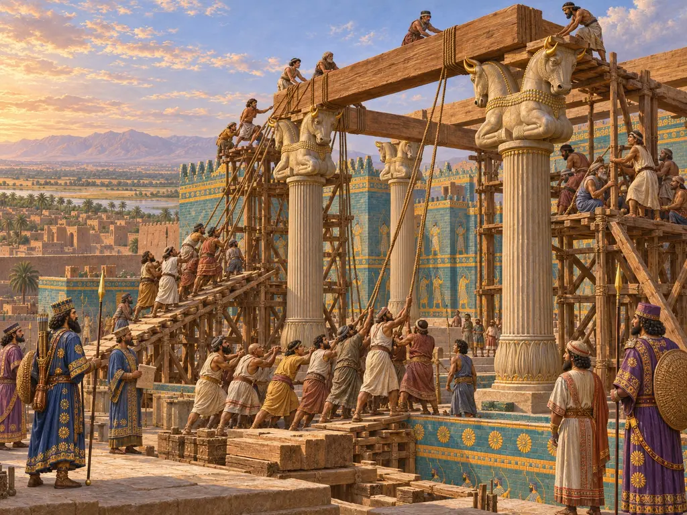
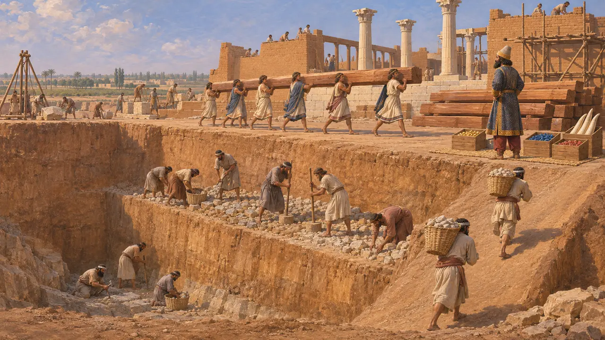
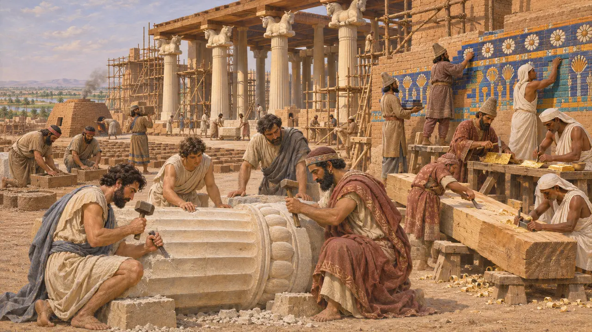
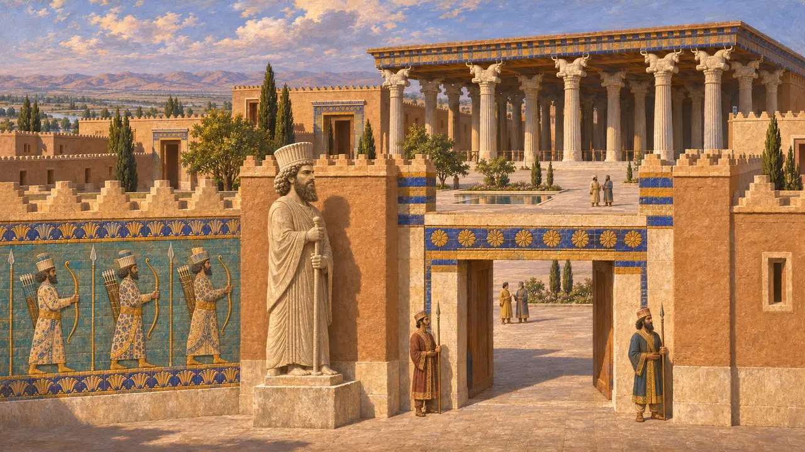
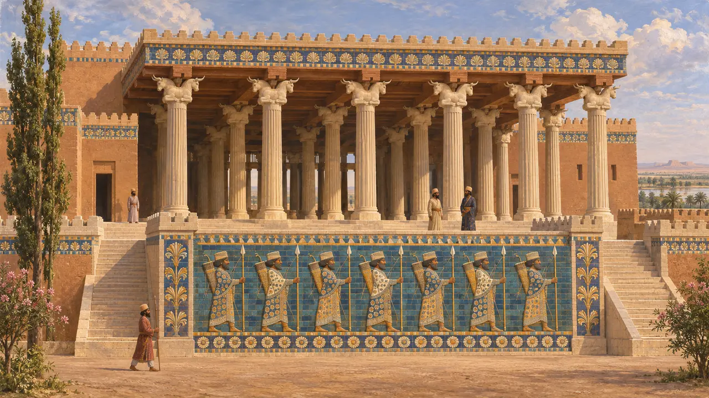
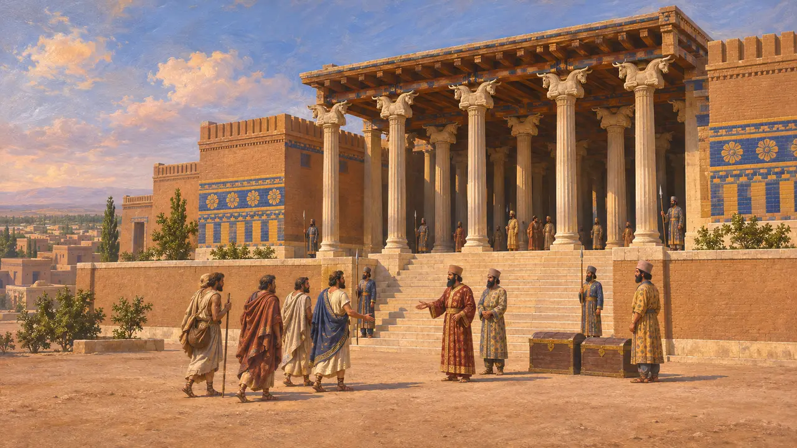

Palast des Dareios
Palast und Säulenhalle Dareios' I. in Susa, in Elam, begonnen um 520–518 v. Chr.
Im Spiel: Level 5: Die Gründungsurkunde
Der Palast des Dareios war die königliche Residenz, die Dareios I. in Susa errichtete, der alten elamischen Stadt, die zu einem der Hauptsitze der persischen Könige wurde. Seine Gründungsurkunde nennt die Länder, die die Baustoffe lieferten, und die Völker, die daran arbeiteten, sodass schon das Bauwerk selbst verkündete, dass das ganze Reich dem König diente. Zu seinen Überresten gehören ein Hofpalast, eine große Säulenhalle und Friese aus Glasurziegeln.
Im Spiel: Im Spiel entsteht der Palast in Abschnitten aus den Materialien der Gründungsurkunde, wobei jeder vierte Teil Bauholz erfordert. Die wirklichen Arbeiten dauerten viele Jahre. Seine Mauern bestanden aus Lehmziegeln mit einer Verkleidung aus Glasurziegeln, und die Spanne von 519 bis 515 im Level vereinfacht einen ungewissen Baubeginn.

Was die Gründungsurkunde sagt
Zeitgenössisch belegtIn seiner Gründungsurkunde sagt Dareios, die Erde sei ausgehoben worden, bis man auf Fels stieß, und dann mit Schotter aufgefüllt worden, an einer Stelle 40 Ellen tief, an einer anderen 20, und darauf sei der Palast errichtet worden. Zedernholz kam vom Libanon, von Assyrern nach Babylon und von Karern und Ioniern nach Susa gebracht. Gold kam aus Sardes und Baktrien, Lapislazuli und Karneol aus Sogdien und Elfenbein aus Kusch, Sind und Arachosien.
DSf

Die Arbeiter vieler Länder
Zeitgenössisch belegtDie Gründungsurkunde nennt auch, wer die Arbeit verrichtete. Babylonier formten und brannten die Ziegel, Ionier und Sardier behauten den Stein, Sardier und Ägypter bearbeiteten das Holz, Meder und Ägypter bearbeiteten das Gold, und Meder und Ägypter schmückten die Wände. Ein verwandter Text, DSz, der vor allem auf Elamisch bekannt ist, wiederholt einen Großteil dieser Liste. Die Gründungsurkunde stellt den Palast als Abbild des Reiches dar, zu dem jedes Volk seinen Teil beiträgt.
DSf; DSz

Was die Ausgräber fanden
Zeitgenössisch belegtFranzösische Teams graben in Susa seit den 1880er-Jahren, als Marcel Dieulafoy die glasierten Ziegelfriese mit Bogenschützen barg, die sich heute im Louvre befinden. Jean Perrots Arbeiten in den 1970er-Jahren brachten Klarheit über einen Wohnpalast aus Lehmziegeln, der nach babylonischer Art um Innenhöfe angelegt war, sowie über eine Halle mit 36 Säulen. 1972 wurde am Tor des Palastes eine Statue des Dareios gefunden, die in Ägypten gemeißelt und mit Hieroglyphen und Keilschrift beschriftet worden war.
J. Perrot (ed.), The Palace of Darius at Susa, 2013

Wann es erbaut wurde und was es zeigt
UmstrittenDie Gründungsurkunde trägt kein Datum. Manche Historiker setzen den Baubeginn schon um 520 an, bald nach den Aufständen von 522 bis 521, andere etwas später. Spätere Könige veränderten die Anlage: Artaxerxes II. berichtet, die Säulenhalle sei unter Artaxerxes I. abgebrannt und er habe sie wieder aufgebaut. Umstritten ist auch, ob die glasierten Bogenschützen eine königliche Garde darstellen, etwa die Truppen, die Herodot die Unsterblichen nennt, oder Perser im Allgemeinen.
A2Sa; P. Briant, From Cyrus to Alexander, 2002

Susa aus griechischer Sicht
Antiker BerichtBei Herodot ist Susa die Residenz des Königs und der Ort seiner Schatzhäuser. Er lässt Aristagoras von Milet die Straße von Sardes nach Susa beschreiben, eine Reise, die Herodot auf etwa drei Monate veranschlagt. Für griechische Autoren stand Susa für den Reichtum und die Ferne des persischen Hofes, doch über den Palast selbst sagen sie wenig.
Herodotus 5.49-54
Quellen
- DSf
- DSz
- J. Perrot (ed.), The Palace of Darius at Susa, 2013
- P. O. Harper, J. Aruz and F. Tallon (eds), The Royal City of Susa, 1992
- P. Briant, From Cyrus to Alexander, 2002
- Herodotus 5.49-54